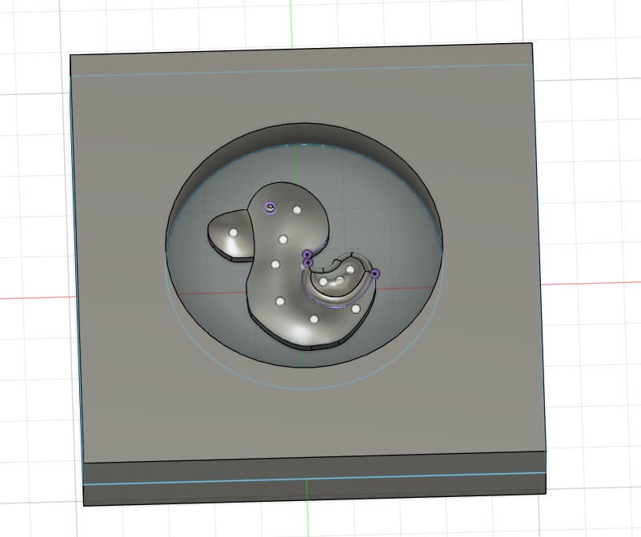
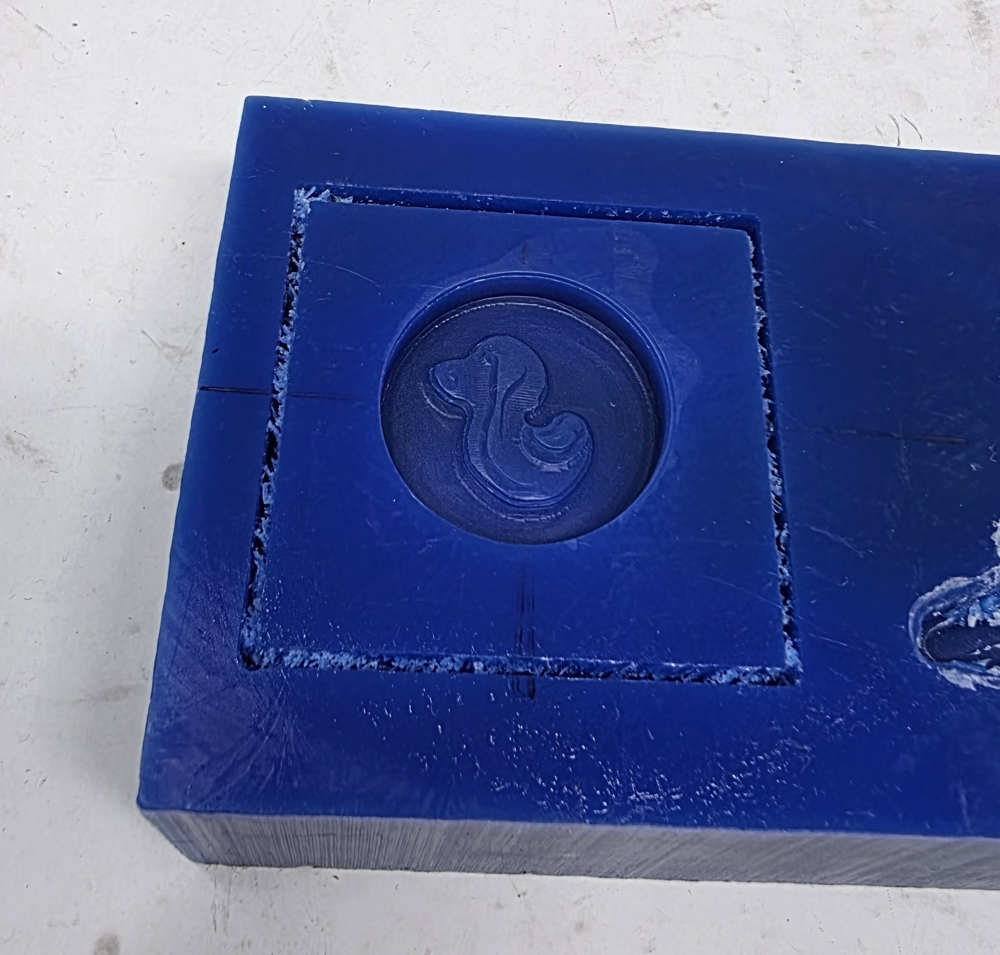
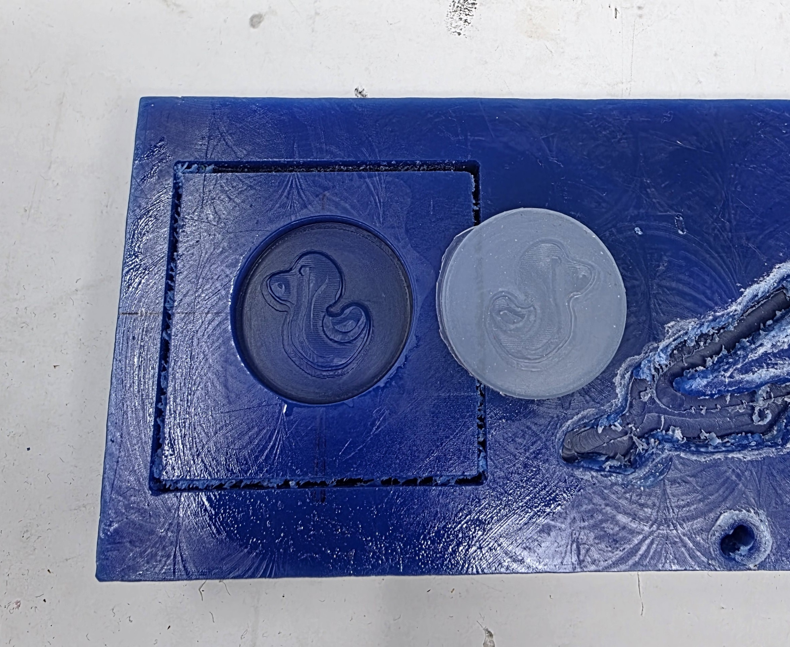
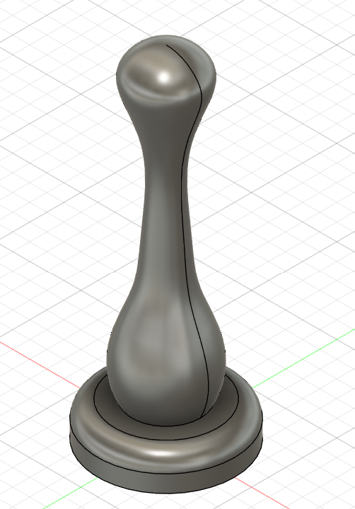
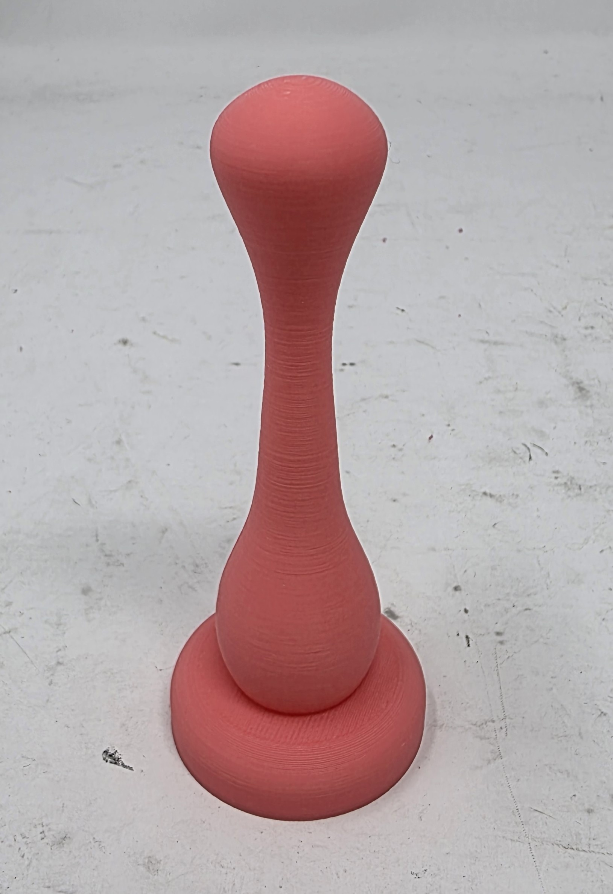
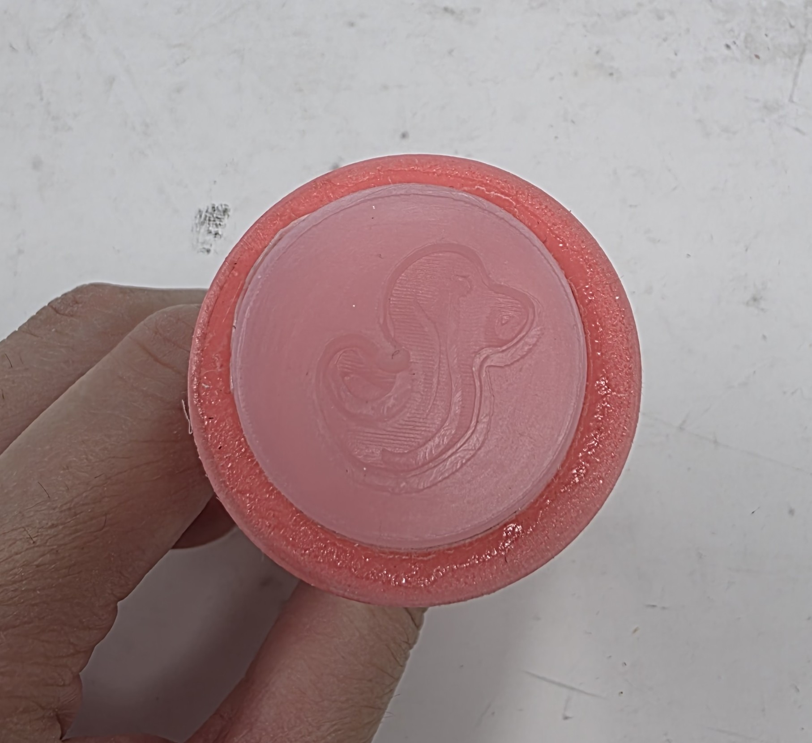

Week 8: CNC Milling
Assignment: Make Something With CNC
For CNC week, I decided to make a sealing wax stamp made out of silicon. I've always was really into sealing wax videos a few years back and wanted to get a custom duck themed wax stamp just for fun, so this was the perfect opportunity! I started by designing the stamp in Fusion 360 using a svg file of a duck that I had made earlier this semester and a combination of various loft tools. I made sure to inset the design properly so that I would be able to pour silicon around it and get a round stamp.Adding the curved top to the surface of the duck took some work but was worth it to get the proper wax seal effect (and would help with releasing the stamp from the wax).

Download Duck Stamp Model
Next, I milled the stamp out of wax with the monoFab machine. I'm not sure why it left a strange line across the duck's profile but I wasn't super worried about the small imperfection.

I then mixed a small amount of liquid silicon and poured it into the wax mold to create the stamp (this took two tries because the first time the ratio was somehow off and the silicon didn't cure).

In order for this little silicon disk to be useable as a stamp, I designed a handle to hold the stamp and 3d printed it out.


Download Wax Stamp Handle Model
I glued the two components together with super glue (unideal, but we didn't have any silicon based adhesives available) and the final product turned out pretty well!

The final test was actually using the stamp to make some wax stamps - and it worked pretty well! I tested it out with hot glue (leftmost) and also some old sealing wax I found in the lab (three right ones). You can clearly see the duck shape preserved in the stamps!